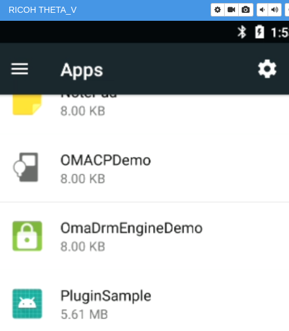
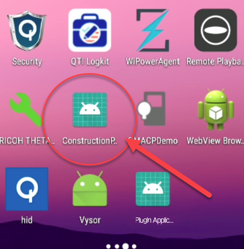
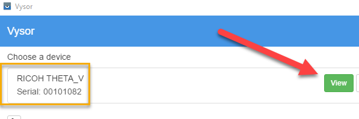

Vysor Tutorial
Vysor is a great tool to provide quick feedback on how your app is doing. Vysor will display a virtual screen from the THETA V to your desktop workstation. Vysor is useful for the following development processes:
- verify plug-in was installed
- set plug-in permissions
- connect camera to Internet for network testing
- verify plug-in launches
- test functionality of third-party Android apps to see if it runs on the THETA V before building your own app
- quickly view and send pictures directly from the camera to test functionality
1 Install Vysor
Go to https://www.vysor.io/ and install Vysor.

2 Select RICOH THETA_V as device
After starting Vysor, you will be able to choose your device, RICOH THETA_V. Press View.

Vysor will start up.

3 Review Installed Apps and Plug-ins
Click on the home button.

Any launcher will work. I'm using the Snapdragon Launcher.

You will see all the apps.

4 Review Plug-in Permissions
Go to App Settings

When developing your custom app, you may need to set Permissions for Storage and Camera.

The Plugin Application in the SDK has the permissions set automatically.
5 Use Vysor to Launch Apps for Quick Testing
Click on your plug-in inside of Vysor to launch your app directly in Vysor for quick testing.
6 Use Vysor to Veriify App Launching
With your camera connected to Vysor, push the physical mode button on your camera to put the camera into plug-in mode. When the camera goes into plug-in mode, it will automatically launch the active plug-in. You can see this visually on Vysor.
7 Use Vysor to Verify Plugin Installation
Vysor will show your installed plug-ins as icons. This is a quick way to verify that your plug-in intalled correctly.
You can install multiple plugins into the THETA V. In the example below, I'm using Vysor to verify that I installed my new plugin ConstructionPlugin in addition to the PluginSample I installed earlier.

Prior to selecting with my new ConstructionPlugin with the API, I set the permissions with Vysor. Settings -> Apps -> YourAppName

8 Verify Image File Names with Vysor
In order to download the picture with adb, you first need to find out the exact filename. You can use Vysor to find the filename.
Go into File Manager

Down into DCIM

Down into 100RICOH

If you have a lot of images on the camera, you may need to scroll down to the bottom of the list.

There's your filename, the newest image. In this case, it's R0010047.JPG
Then use adb pull to download the picture to your local machine
$ adb pull /sdcard/DCIM/100RICOH/R0010047.JPG
/sdcard/DCIM/100RICOH/R0010047.JPG: 1 file pulled. 21.2 MB/s (2790527 bytes in 0.126s)
9 Use Vysor to Configure WiFi and Test Apps
You can use Vysor to connect your camera to the Internet, similar to connecting a normal Android phone to the Internet. The only tricky part is to enable the keyboard and back button on Vysor.
9.1 Disable the THETA V camera process
The THETA V camera process interferes with the keyboard and backbutton. To use the keyboard and back button, you need to stop the camera process.
The video Getting Vysor Back Button to Work - RICOH THETA Development shows the setup process.
The steps are also explained below.
9.1.1 Connect your THETA V to Vysor

9.1.2 Go to settings
Expand apps.
Go into settings.

9.1.3 Go to Developer options
If you don't have Developer options visible on your camera, you may need to enable developer options by going to About phone and tapping Build number 7 times.

9.1.4 Go to Running services
Access Running services.
9.1.5 Select the RICOH THETA V process

9.1.6 Locate the CameraService

9.1.7 Stop the service
Be bold.
9.1.8 Test the keyboard
9.1.9 Test the back button